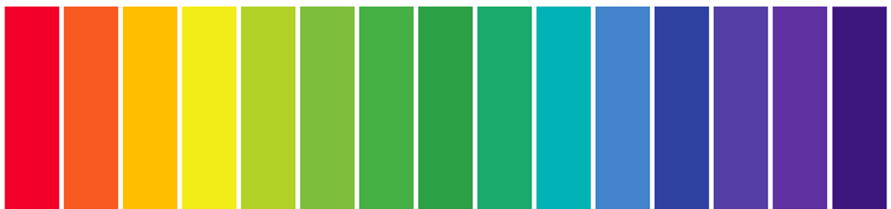

<p>
  food-ph-indicator-meter works!
</p>

ph Value in ph Indicator meter {{phValue}}
<div style="height: 300px; width: 500px; background-color:white; margin-left: auto; margin-right: auto; border-radius: 5px;">
  <ion-row style="padding-top: 50px;">
    <ion-col size="12">
      
    </ion-col> 
    <ion-col size="12">
      <!--  -->
      <!-- arrow size adjustment is 1.5% -->
      <!-- <ion-icon style="position:absolute;left:48.5%;" name="caret-up-outline"></ion-icon> -->
      <ion-icon class="wiof-ph-widget-arrow" [ngClass]="updatePhPointer()" name="caret-up-outline"></ion-icon>

    </ion-col> 
<!-- <ion-col class="wiof-ph-widget-stripe ph0" [ngClass]="ion-select"></ion-col>
<ion-col class="wiof-ph-widget-stripe ph1"></ion-col> 
<ion-col class="wiof-ph-widget-stripe ph2"></ion-col>
<ion-col class="wiof-ph-widget-stripe ph3"></ion-col>
<ion-col class="wiof-ph-widget-stripe ph4"></ion-col>
<ion-col class="wiof-ph-widget-stripe ph5"></ion-col>
<ion-col class="wiof-ph-widget-stripe ph6" ></ion-col>
<ion-col class="wiof-ph-widget-stripe ph7" ></ion-col>
<ion-col class="wiof-ph-widget-stripe ph8" ></ion-col>
<ion-col class="wiof-ph-widget-stripe ph9" ></ion-col>
<ion-col class="wiof-ph-widget-stripe ph10" ></ion-col>
<ion-col class="wiof-ph-widget-stripe ph11" ></ion-col> -->

  </ion-row>
</div>